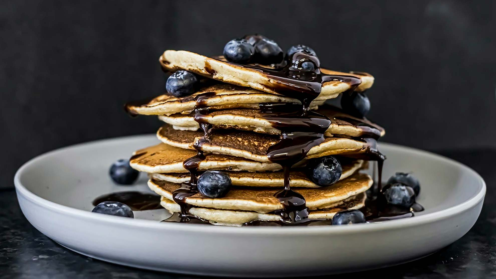

Difficulty: easy
Preparation time: 15 min
Tags: #breakfast #brunch #dessert
Ingredients
- 200g self-raising flour
- 1 teaspoon of baking powder
- 1 egg
- 300ml milk
- knob butter
- 150g pack of blueberry
- maple syrup
Instructions
- Mix together 200g self-raising flour, 1 tsp baking powder and a pinch of salt in a large bowl.
- Beat 1 egg with 300ml milk, make a well in the centre of the dry ingredients and whisk in the milk to make a thick smooth batter.
- Beat in a knob of melted butter, and gently stir in half of the 150g pack of blueberries.
- Heat a teaspoon of sunflower oil or small knob of butter in a large non-stick frying pan.
- Drop a large tablespoonful of the batter per pancake into the pan to make pancakes about 7.5cm across. Make three or four pancakes at a time.
- Cook for about 3 minutes over a medium heat until small bubbles appear on the surface of each pancake, then turn and cook another 2-3 minutes until golden.
- Cover with kitchen paper to keep warm while you use up the rest of the batter.
- Serve with golden or maple syrup and the rest of the blueberries.